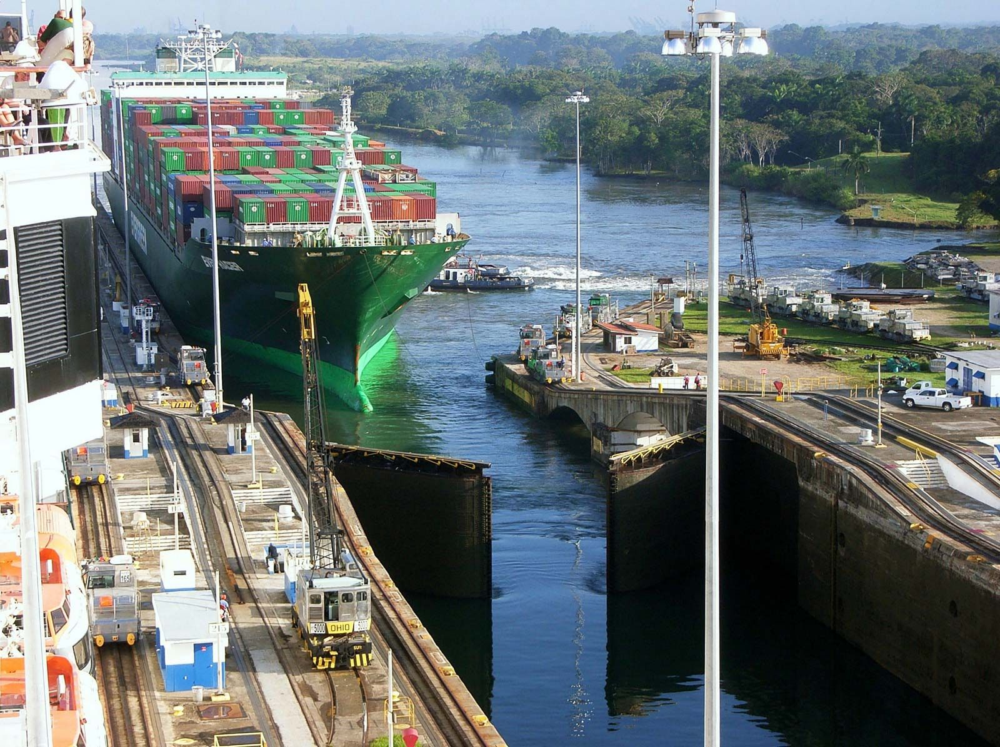

Panama City and the Canal
Walk the plazas of Casco Antiguo, trace the city's earlier chapter at Panama Viejo and learn how the canal shaped Panama's global role. The capital also offers museums, craft markets and a broad gastronomic scene.
See matching concepts